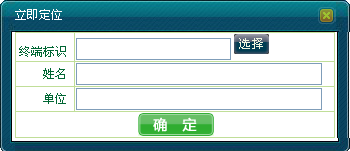
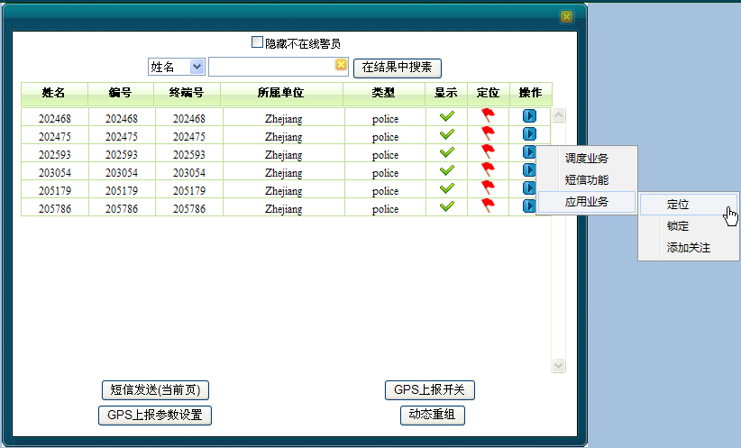
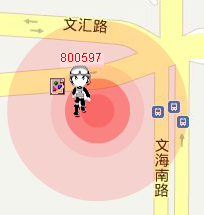
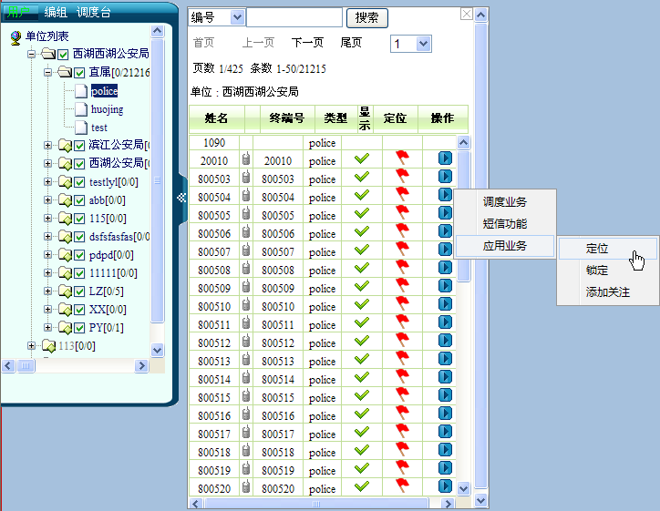

被定位的移动用户目标位置闪烁显示。并地图以目标移动用户为中心。系统有以下几种立即定位移动用户的方法：
1）在系统操作菜单栏中单击［调度功能/呼叫面板］，弹出“呼叫面板”对话框。
2）单击“应用业务”模块中的“立即定位”，弹出“立即定位”对话框，如下图1所示。

图1. 立即定位对话框
3）输入终端标识号或者单击右侧＜选择＞添加要立即定位的移动用户，系统会自动显示与该终端绑定的移动用户姓名及单位。
4）单击＜确定＞，系统会向GPS服务器上报此用户的经纬度信息。下发成功会跳出“下发指令成功”提示框，失败则会跳出“命令下发失败”提示框。
1）在地图上框选移动用户，该区域内被选中的所有用户（包括显示和隐藏的）都将呈现在用户列表中。
2）单击“选中用户列表”中要锁定的用户右侧三角按钮，选择［应用业务/定位］，如下图2所示。

图2. 对框选用户进行定位
3）地图中心点会立即定位到目标移动用户在地图上所处的位置，并会出现闪动效果。如图3所示。

图3. 对移动用户定位显示
1）在成员树中找到要锁定的用户，单击右侧三角按钮。
2）选择［应用业务/定位］，如图4所示。

图4. 对成员树中用户进行定位
3）地图中心点会立即定位到目标移动用户在地图上所处的位置，并会出现闪动效果。
Copyright © 2012 Eastcom, Inc. All rights reserved. |
||